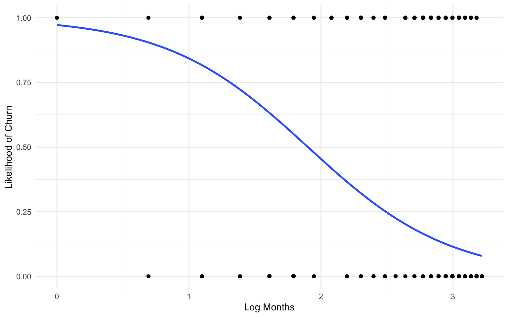
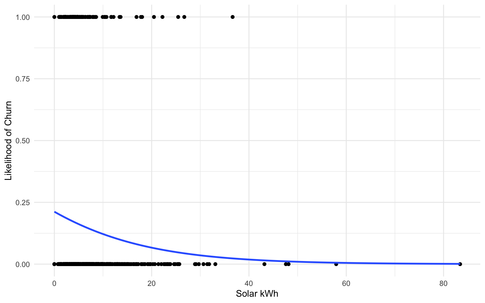

Churn and Default
Introduction
For this portion of the research, customers in existing solar farm projects are evaluated for their subscription and payment status. Participation in community solar farms is voluntary, hence customers may exit the program at any point, often subject to a cancellation fee set out in the contract. Additionally, customers sometimes fail to pay the monthly solar farm subscription fee. Churn refers to the act of a customer exiting the solar farm, whereas default refers to the customer failing to pay the monthly subscription fee.
Given the incipient nature of community solar, this analysis provides an opportunity to quantify the likelihood of churn or default, along with determining any household or demographic attribute associated with statistically different rates of either churn or default. The goal of the analysis is to first describe the characteristics of the residents, the prevalence of default and/or churn rates, the prevalence of churn rates, and any statistically significant differences between groups in their default, late payments or churn rates.
Literature Review
to-do: to be added/folded into the Introduction to frame the macro-scope of this study
Methods
note
Analysis is awaiting Experian appending.
Data Collection
Customer data is collected from two solar farms, the Frog Hollow Solar Farm and Howell Solar Farm. Monthly account level data was collected from January 2020 to April 2022. Account level information includes monthly payment performance, for which churn and default triggers may be captured.
The data consists of 32,385 monthly observations over 813 homes, 812 accounts and 621 users. To avoid data quality issues and to analyze any potential churn and default trends, for Frog Hollow households the analysis will drop values in October 2021 until April 2022. This narrowed dataset is comprised of 31,704 observations; the homes, accounts and users did not change.
The first ten rows of the data are presented, grouped by account number. Unique identifiers were replaced with sequential IDs.
- Tenure: length in months each account was active
- Payment_Method: either card or ACH/direct debit method
- kwh_solar: annual (right?) solar allocation in kWh
- Churn: binary _var_iable capturing if an account left the solar farm
- defauted: binary variable capturing if account holder Default on payment
- Income: Low (<$50,000) or High (>$50,000)
- Solar_Farm: Either Howell or Frog Hollow
Descriptive Statistics
Account level summary statistics by solar farm are provided in Table 1 below.
(hold for experian data to add more descriptives)
The number of Churn and Default events are captured in Table 1. Note, the relative rare occurence of defaulting likely removes the possiblity of determining any statistically significant difference between customer attributes. However, of the 812 accounts, 118 or just over 14.5% of accounts, experienced churn.
| Table 1: Summary Statistics by Solar Farm | Overall, N = 8121 | Frog Hollow (CHGE), N = 4541 | Howell (O&R), N = 3581 |
|---|---|---|---|
| Average Tenure | 22 (20, 23) | 22 (20, 22) | 23 (22, 24) |
| Average kWh | 6.1 (3.8, 9.6) | 5.9 (3.5, 9.0) | 6.3 (4.2, 10.3) |
| Income | |||
| High | 224 (91%) | 33 (79%) | 191 (94%) |
| Low | 21 (8.6%) | 9 (21%) | 12 (5.9%) |
| Unknown | 567 | 412 | 155 |
| Payment Method | |||
| ach | 239 (30%) | 125 (28%) | 114 (32%) |
| card | 565 (70%) | 322 (72%) | 243 (68%) |
| Unknown | 8 | 7 | 1 |
| Churn | 118 (15%) | 59 (13%) | 59 (16%) |
| Default | 6 (0.7%) | 1 (0.2%) | 5 (1.4%) |
| 1 Median (IQR); n (%) | |||
Average tenure for the entire dataset is just under two years (22 months). Table 2 provides descriptive statistics grouped by tenure length. Longer tenured households had larger solar allocations compared to lower tenured households, 7.3 kWH for 2+ year customers compared to 3.7 for < 6 months.
| Table 2: Summary Statistics by Tenure Length | Overall, N = 7881 | < 6 Months, N = 291 | 12-24 Months, N = 6111 | 6-12 Months, N = 271 | Over 24 Months, N = 1211 |
|---|---|---|---|---|---|
| Average Tenure | 22 (20, 23) | 4 (3, 5) | 22 (21, 22) | 10 (8, 10) | 25 (24, 25) |
| Average kWh | 6.2 (3.8, 9.6) | 3.7 (1.9, 5.6) | 6.1 (3.8, 9.2) | 6.4 (3.6, 12.6) | 7.3 (4.7, 10.8) |
| Income | |||||
| High | 220 (91%) | 14 (88%) | 146 (92%) | 9 (82%) | 51 (91%) |
| Low | 21 (8.7%) | 2 (12%) | 12 (7.6%) | 2 (18%) | 5 (8.9%) |
| Unknown | 547 | 13 | 453 | 16 | 65 |
| Payment Method | |||||
| ach | 239 (31%) | 3 (14%) | 199 (33%) | 8 (30%) | 29 (24%) |
| card | 541 (69%) | 18 (86%) | 412 (67%) | 19 (70%) | 92 (76%) |
| Unknown | 8 | 8 | 0 | 0 | 0 |
| Churn | 110 (14%) | 12 (41%) | 74 (12%) | 22 (81%) | 2 (1.7%) |
| Default | 5 (0.6%) | 0 (0%) | 3 (0.5%) | 1 (3.7%) | 1 (0.8%) |
| 1 Median (IQR); n (%) | |||||
Model
To determine the probability an account will experience either churn or default, a logistic regression is used to construct a model. The model in brief is described below.
In the limited data available, statistically significant effects were measured for probability of churn for both tenure (Months) and days late. Due to relatively small number of observations of late payments, no statistically significant results were measured in probability of late or default payments.
\[\begin{equation} P_{d} = \beta_{0} + \beta_{1}*Months +\beta_{2}*(Payment Method = Card) +\beta_{3}*Income=Low \\ +\beta_{4}*Solar kwH + \beta{5}*(Solar Farm=Howell) \end{equation}\]
Results
Churn Analysis
##
## Call:
## glm(formula = Churn ~ log_tenure + payment_method + kwh_solar +
## Income + solar_farm, family = "binomial", data = joined)
##
## Deviance Residuals:
## Min 1Q Median 3Q Max
## -2.9784 -0.5236 -0.5033 0.2449 2.0942
##
## Coefficients:
## Estimate Std. Error z value Pr(>|z|)
## (Intercept) 7.111129 1.586373 4.483 0.00000737 ***
## log_tenure -2.327192 0.513664 -4.531 0.00000588 ***
## payment_methodcard -0.107683 0.472935 -0.228 0.819886
## kwh_solar -0.005004 0.039732 -0.126 0.899775
## IncomeLow 0.498639 0.587486 0.849 0.396011
## solar_farmHowell (O&R) -1.660039 0.465904 -3.563 0.000367 ***
## ---
## Signif. codes: 0 '***' 0.001 '**' 0.01 '*' 0.05 '.' 0.1 ' ' 1
##
## (Dispersion parameter for binomial family taken to be 1)
##
## Null deviance: 276.31 on 239 degrees of freedom
## Residual deviance: 202.24 on 234 degrees of freedom
## (572 observations deleted due to missingness)
## AIC: 214.24
##
## Number of Fisher Scoring iterations: 5Default Analysis
##
## Call:
## glm(formula = Default ~ log_tenure + payment_method + kwh_solar +
## Income + solar_farm, family = "binomial", data = joined)
##
## Deviance Residuals:
## Min 1Q Median 3Q Max
## -0.5486 -0.1772 -0.1525 -0.1376 2.9280
##
## Coefficients:
## Estimate Std. Error z value Pr(>|z|)
## (Intercept) -18.69792 2682.77317 -0.007 0.994
## log_tenure -0.88710 0.68418 -1.297 0.195
## payment_methodcard 16.60502 2682.77251 0.006 0.995
## kwh_solar 0.05863 0.07635 0.768 0.443
## IncomeLow 1.48089 1.28400 1.153 0.249
## solar_farmHowell (O&R) 0.07218 1.32001 0.055 0.956
##
## (Dispersion parameter for binomial family taken to be 1)
##
## Null deviance: 40.688 on 239 degrees of freedom
## Residual deviance: 36.522 on 234 degrees of freedom
## (572 observations deleted due to missingness)
## AIC: 48.522
##
## Number of Fisher Scoring iterations: 19The logit curves below show the relationship between the distribution of both tenure and days late with the probability of churning. The first graph shows that the longer the tenure, the lower the likelihood. The second graph shows that the days of late payments are generally not associated with likelihood of churn.
